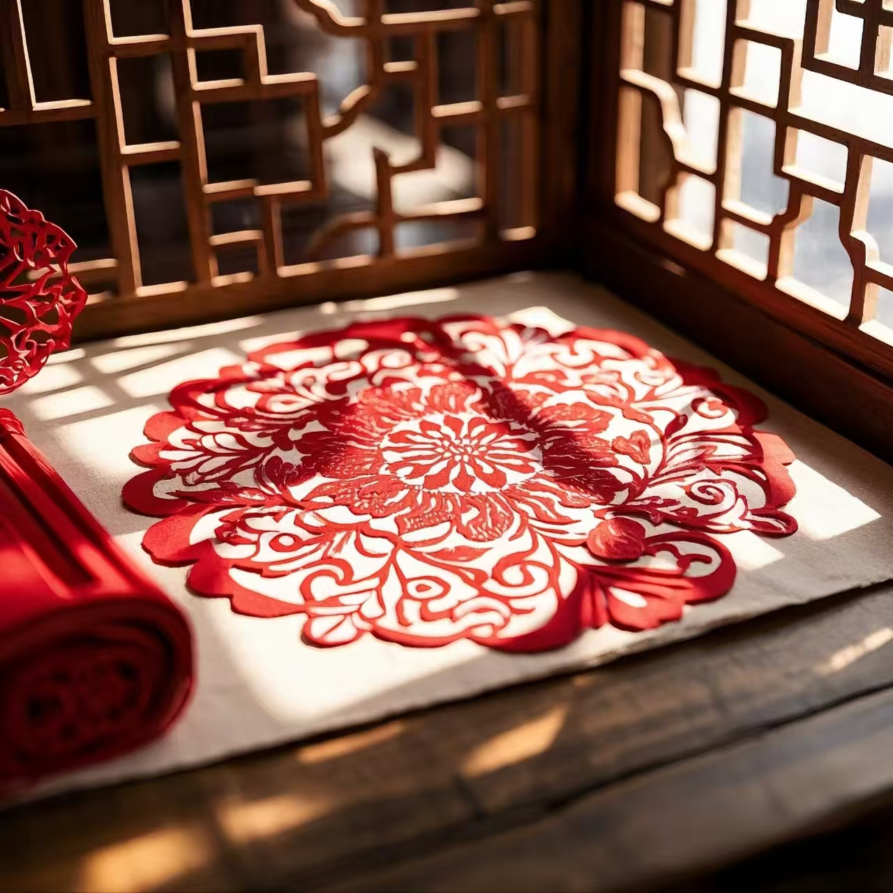

传统剪纸
方寸之间的民俗风情 · 人类非物质文化遗产

一、技艺简介
剪纸是中国最古老的民间艺术之一，以剪刀或刻刀在纸张上镂空雕刻，形成各种吉祥图案和装饰纹样。剪纸作品广泛应用于节庆装饰、婚嫁礼仪、窗花贴纸等场合，是中国民间美术的重要代表，承载着丰富的民俗文化内涵。剪纸艺术以"千剪不断、万刻不乱"为技艺精髓，方寸之间蕴含着无限的艺术可能。
剪纸的独特魅力在于其简约而不简单的艺术语言。一把剪刀、一张红纸，无需繁复的工具和材料，却能剪出大千世界的万千气象。剪纸艺人以心为笔、以剪为墨，将生活的美好祝愿和民间的吉祥寓意融入方寸之间的图案之中。剪纸是中国民间美术中分布最广、参与人数最多的艺术形式之一，被誉为"民间艺术的活化石"。
二、历史渊源
剪纸艺术起源于汉代，最早出现在金银箔片和皮革的镂空装饰中。唐代剪纸技艺已相当成熟，宋代出现了以剪纸为职业的艺人群体。明清时期，剪纸艺术达到鼎盛，形成了南北两大流派，南方剪纸细腻精巧、北方剪纸粗犷豪放。
2006年，剪纸被列入国家级非物质文化遗产名录。2009年，中国剪纸入选联合国教科文组织人类非物质文化遗产代表作名录，标志着中国剪纸艺术的国际影响力得到了世界认可。
三、主要流派
- 蔚县剪纸：河北蔚县，以刻代剪、色彩艳丽，题材广泛，是中国彩色剪纸的代表
- 陕西剪纸：古朴粗犷、乡土气息浓郁，充满黄土高原的豪迈与质朴
- 扬州剪纸：线条流畅、清秀雅致，以精细见长，是南方剪纸的代表
- 佛山剪纸：金碧辉煌、融入铜凿工艺，是岭南剪纸的独特流派
- 少数民族剪纸：造型独特、民族风格鲜明，充满原始的生命力和创造力
四、主要技法
- 阴刻：刻去图案线条，保留空白部分，线条简洁有力
- 阳刻：保留图案线条，刻去空白部分，线条流畅细腻
- 阴阳结合：阴刻阳刻并用，虚实相生，层次丰富
- 剪影：只剪出人物或物体的外形轮廓，简洁概括
- 套色剪纸：将不同颜色的纸张套叠在一起，色彩丰富
五、制作工序
- 设计：构思图案，绘制草图，确定剪纸的主题和构图
- 装订：将多层纸钉在一起，一次可剪出多张，提高效率
- 剪刻：用剪刀剪或刻刀刻，技法包括阴刻、阳刻、阴阳结合等
- 揭离：轻轻揭开各层纸张，小心不要撕破
- 装裱：根据用途选择装裱或直接粘贴，保护剪纸作品
六、图案寓意
- 福字：象征福气临门、吉祥如意，是最常见的剪纸图案
- 寿字：象征健康长寿、延年益寿
- 喜字：象征喜事临门、婚姻美满，常见于婚庆剪纸
- 鱼：象征年年有余、富足安康
- 莲：象征清廉高洁、纯洁美好
- 牡丹：象征荣华富贵、繁荣昌盛
- 蝙蝠：象征福气临门、福寿双全
"一把剪刀，一张红纸，剪出了千百年的吉祥与祝福。剪纸之美，在于方寸之间的千变万化，在于纸屑纷飞中的匠心独运。"